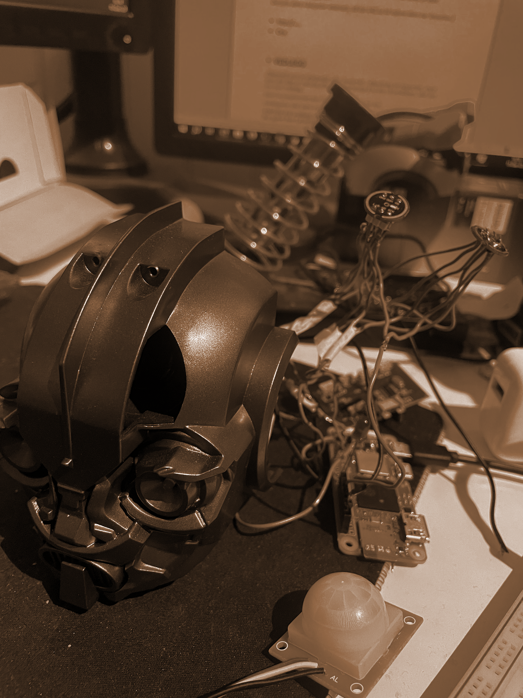
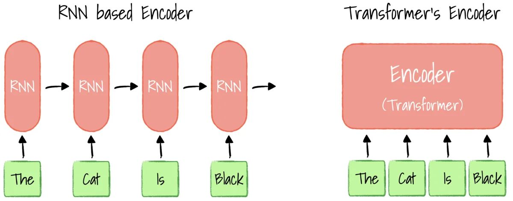
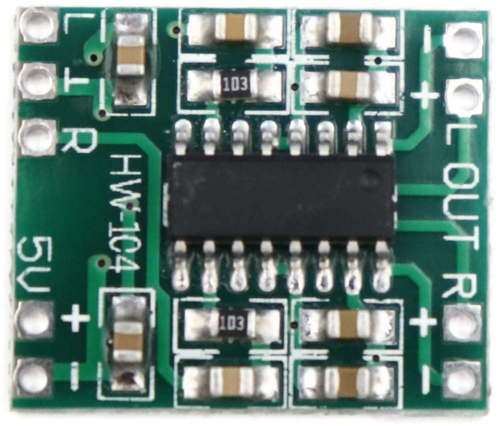

Oda, en norsk stemmeassistent
Et to måneder langt prosjekt på NTNUs avansert parallell-løp: en norsktalende stemmeassistent ved navn Oda, som kjører på en Raspberry Pi Zero W. Egen RNN-basert wake-word-modell trent på 30 000 norske lydklipp jeg filtrerte selv, Whisper for tale-til-tekst, en offline GPT for åpne spørsmål, og et nett av ESP32-sensormoduler for det en chatbot ikke kan vite.
Hva den gjør
Du sier «Oda» og spør om noe. Hvis det er en kommando systemet kjenner igjen («hva er klokka», «hva er temperaturen i rommet»), svarer den fra cache eller sensordata. Hvis det er et åpent spørsmål («hva er meningen med livet»), ruter den til en lokal LLM. Alt kjører offline som standard, ingen sky-API-er i svarstien.

Wake-word fra bunnen av
Den vanskeligste delen av prosjektet var data, ikke modellering. Det finnes svært lite offentlig norsk taledata med pålitelige undertekster, så jeg bygde min egen pipeline: 27 000 klipp fra Språkbanken, pluss rundt 750 000 klipp skrapet fra 251 norske YouTube-kanaler med teksting. Tekstkvaliteten varierte voldsomt. TV-kanaler som NRK og TV2 hadde av og til norsk tekst over engelsk lyd, så jeg kjørte alle klippene gjennom Whisper-large og beholdt bare de der Whisper var enig med originalteksten. Omtrent 30 % overlevde, og jeg satt igjen med rundt 30 000 høykvalitetsklipp å trene på.
For å gjøre modellen mindre byttet jeg det vanlige norske alfabetet med et
fonetisk alfabet med to ekstra bokstaver: ɵ for «ng»-lyden og
ʂ for «sj/kj/sjk/tj»-klyngen. Færre, jevnere fordelte etiketter,
lettere å lære. Selve wake-word-modellen er en liten GRU med CTC-loss, valgt
for effektivitet på Zero W.
Pipelinen
- Alltid-på-RNN overvåker en strøm med mel-spektrogrammer etter ordet «Oda».
- Når den utløses, tar serveren opp lyd inntil rundt 0,36 s med stillhet, og sender deretter lyden til Whisper-medium for transkripsjon.
- Kommandoruter sjekker om transkripsjonen matcher en kjent intensjon. Hvis ja, utfør den. Hvis ikke, rut til LLM-en.
- Offline LLM:
orca-mini-3b-gguf2-q4_0via gpt4all. Snakker ikke norsk særlig godt, så systemet oversetter NO→EN→prompt→EN→NO via deep_translator. - TTS-cache for repetitive svar («klokka er…», alle tall under 10¹¹). 419 KB på disk, holder svarstien offline for enkle spørsmål.

ESP32-sensornett
Assistenten kan svare på spørsmål om den fysiske verdenen fordi billige ESP32-moduler med sensorer er spredt rundt: et termometer, en PIR-bevegelsessensor, en støvsensor. Hver ESP32 booter i Bluetooth-server-modus hvis den ikke har sett Wi-Fi-et før; ved å si «oppstart» får man Pi-en til å skanne etter dem og overlevere innlogging via Bluetooth (svakt kryptert, slik at SSID/passord ikke kringkastes i klartekst). Når de er på nettverket, kan de adresseres over lokale sockets. En enkelt byte over socket-en betyr «ping», «name» eller «value».



Demo
Spør om klokka, romtemperaturen og meningen med livet, på norsk.
Hva det lærte meg
Modellen var aldri flaskehalsen. Norske taledata var det, og å finne ut hvordan jeg skulle hente og filtrere dem fra YouTube (ved å bruke en større modell til å bedømme en mindre), var den mest nyttige ferdigheten jeg lærte meg. Den nest mest nyttige var å forstå hvor henholdsvis PyTorch og TensorFlow gjør seg fortjent til plassen sin: PyTorch føltes bedre for trening og iterasjon, TF føltes raskere når modellen var fryst.
Kursrapport
Full norsk IELS1001-rapport, «Talestyrt smart assistent med ESP moduler», dekker hele arkitekturen, treningspipelinen, sensorprotokollen og budsjettet: